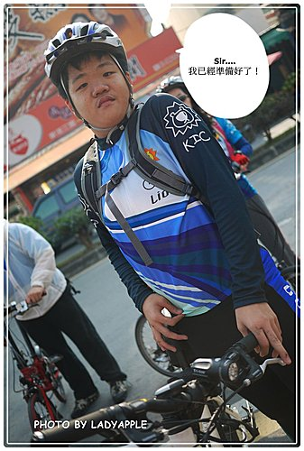
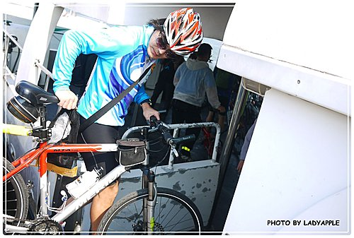
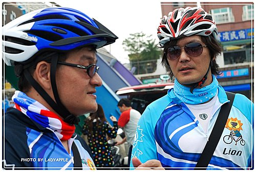

藍天、白雲、大海，騎著單車在小琉球列隊歡迎。
2010.12.12（日）
這是我第二次跟著單車社行動，
也是我個人第二次來到小琉球。
一次是夏天、一次是冬天，也看到不一樣的小琉球之美。
其實我還蠻心虛的寫下這篇文章，
因為我是全部人中唯一一個沒有騎單車繞小琉球的人..... ...哈哈...（乾笑）。
...哈哈...（乾笑）。
連小小朋友都騎完全程，
只有我是騎著機車跟著....囧
所以實在沒資格評論小琉球好不好騎。
但是我還蠻熱衷在觀察所有人騎車的神情，
因此拍了不少偷拍的照片，
就請大家慢慢欣賞.....^^
↓ 當天早上，我們已經到了東港的渡船頭，準備搭船去小琉球囉～
不過等船的時候，有一段空檔，所以大家都很愜意的閒聊，
我伺機地拍了一些照片。
↓唉呀～雄赳赳、氣昂昂的小帥哥挺起胸膛準備出發，
氣勢很夠哦～

↓等啊等啊，終於到了開船時間，大家牽著單車輪流上船。

我因為沒有單車，身上只有背著相機和腳架，所以行動很隨意，
這邊晃晃，那邊竄竄，
看到大家很開心的在甲板上迎著海風說話，
雖然船隻在海上有點晃動，開的也算很快，
但是看著海平面上偶爾的捕魚船，以及船隻劃開水面激起的白色浪花，
我想起了多年前也是一樣搭船到小琉球的回憶。
↓ 沒人發現我把相機伸到船外偷拍呢～所以表情很自然！
↓ 可以說是單車社的F4嗎？
↓ 我看到了一位父親殷殷切切的交代兒女要注意騎車安全.....連忙拍下這一個畫面
船隻大約行駛30分鐘左右，遠遠就看到小琉球接近了！
入港後，大家輪流下船，
準備展開一天的單車行。
↓ 阿咧？！在說什麼事情呢？

小琉球是一個到處都看的到珊瑚礁岩隆起的地形，
所以很多景點，例如美人洞、烏鬼洞等等，都跟這種地形有關。
在墾丁的鵝鸞鼻公園我也有看過類似的地形，
不過墾丁可不能在這種珊瑚礁岩中騎腳踏車喲～
↓小美女全副武裝，英氣勃勃的！
雖然現在是冬天，不過小琉球在冬天的太陽並沒有夏天那般的毒辣。
暖暖的冬陽，微微的海風，騎起單車應該會舒服很多，
因在這個時間點來到小琉球，真的是舒服啊～
不會太熱也不會太冷，一切都是那麼恰恰好！
在這個島上沒有很緊湊的步調，也沒有很先進的高樓大廈，
但是樸實的漁村風光可以抒解現代人緊張的心靈。
因此，我拿著相機隨手一拍，都覺得這裡一景一物在畫面上都像是一張明信片。
↓在冬天的小琉球捕捉夏日風情畫
↓父女很悠哉的享受單車的速度感，好幸福呢！
↓ 瞧瞧～每個人都是擒著笑容騎車，可見心情都很愉悅！
↓牽著單車漫步在路邊，蔚藍的大海成為最好的背景
中午，大家到了一個露營地休息，很抱歉我忘了營區的名字，
但是這裡很靠近海邊哦～
除了有好吃的海鮮料理，總覺得在這裡露營一定會有不一樣的滋味！
聽說晚上在這裡露營，還能看到沒有光害的星空，
在海邊數著星星，聽著海潮聲入眠，
想到這我就恨不得想邀好友們晚上來小琉球體驗露營的經驗...>///<
順便大唱阿妹的「聽海」....
↓這裡還有一個鐘，可愛的弟弟跳了好幾次想敲它
↓吃飽後，這裡的海邊還有一排躺椅，舒服到讓人想打個盹！
↓哇～幸福的全家合影哦～
之後，大家繼續騎著單車前進，
遇到美麗的風景就停下看看，完全就是很悠閒的享受，
這就是騎單車的樂趣 之一啊！
↓好可愛的小弟弟，跟其他小姊姊和小哥哥們玩得很歡暢！
笑容無憂無慮的！
↓表情豐富的小妹妹，當天一直跟我玩躲貓貓的遊戲，可惜還是被我拍到囉～
↓小琉球路邊的景色是很單純的，也沒有什麼車，所以我很放心的停在路中間拍照
↓父子一同飆單車
↓ 全家和「花媽」岩（其實應該是觀音岩吧）合照
↓玩耍中
↓每個人都努力的看綠析龜，大家專注的背影我拍下囉～
↓島上還有羊咩咩，弟弟既期待又害怕受傷害的靠近他，不過羊咩咩的眼神好兇惡...(怕)
↓遠方的海平面和閃閃發亮的海水，騎著單車迎著光線，有種遠征的感覺
來到小琉球唯一的沙灘-「中澳沙灘」，
這裡比我之前來的時候範圍縮小了！
之前還看到有很多遊客在這裡浮潛，
聽說這裡的海很美很美，海水乾淨清澈，簡直就像是一塊世外桃源！
所以為了維持這塊美麗的海域和沙灘，
千萬不要留下垃圾在這裡...>"<
↓看起來很像在長灘島的海灘啊～
漸漸接近黃昏時刻，
我們要往最後一個目標-花瓶岩前進，
其實到了中澳沙灘後，以經算是環島一圈了！
小琉球真的很適合全家騎單車出遊！
↓有騎單車的速度感嗎？
↓ 最後在花瓶岩來張全體大合影，我的大腳架總算派上用場了！
↓停在港邊的小船
↓漁村風光
最後，在夕陽時分，我們搭船緩緩駛出港口，結束這一天的行程囉～
↓ 黃昏的港口，有人垂釣。
PS.很抱歉文章隔了這麼久才寫完，希望大家會滿意這次的照片！謝謝！....*^^*
<完>